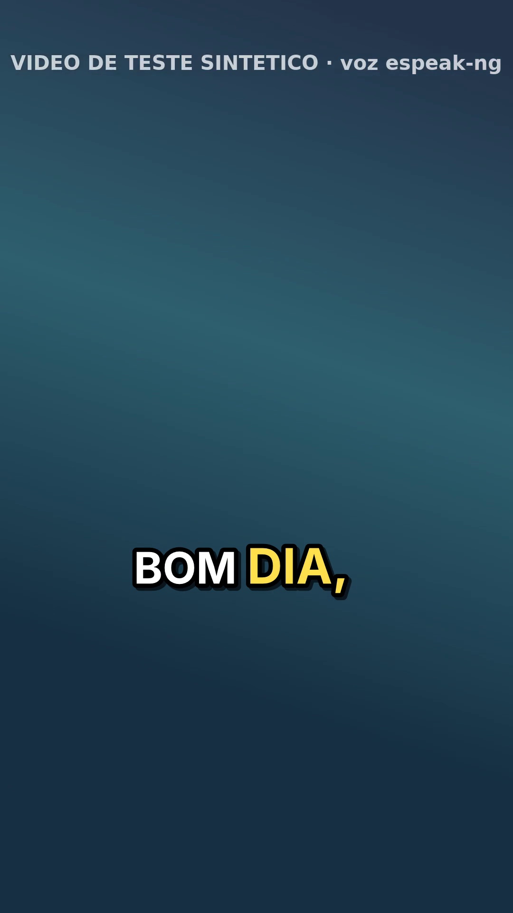
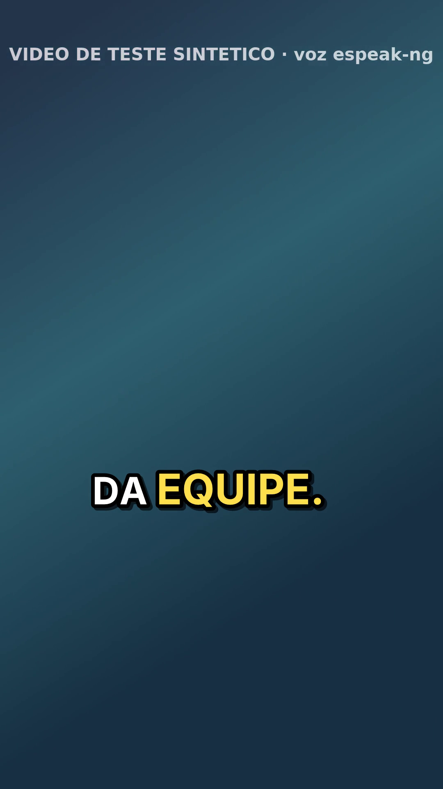

<title>Nuvem · Fred · pasta vigiada de vídeo</title>
<meta name="claude:viewport-fit-sides" content="cover">
<link rel="preconnect" href="https://fonts.googleapis.com">
<link rel="preconnect" href="https://fonts.gstatic.com" crossorigin>
<link rel="stylesheet" href="https://fonts.googleapis.com/css2?family=Public+Sans:wght@400;600;700&family=IBM+Plex+Mono:wght@400;500&display=swap">
<style>
/* Layout: relatório de uma coluna (~70ch), mesmo sistema visual da série "Nuvem"; o ciclo do vídeo em etapas, quadros 9:16 lado a lado */
:root {
  --bg: #f6f8f9; --surface: #ffffff; --fg: #17222b; --muted: #55636e; --line: #d9e1e6;
  --accent: #0d6b6e; --ok: #1f7a3d; --ok-bg: #e3f3e8; --warn: #9a5b00; --warn-bg: #fdf0d9; --code-bg: #eef2f4;
  --sans: "Public Sans", "Segoe UI", system-ui, sans-serif;
  --mono: "IBM Plex Mono", ui-monospace, "SFMono-Regular", Menlo, monospace;
}
@media (prefers-color-scheme: dark) { :root:not([data-theme="light"]) {
  --bg: #11181d; --surface: #182229; --fg: #e4ebef; --muted: #9aa9b3; --line: #2a3943;
  --accent: #5cc4c0; --ok: #6fd18e; --ok-bg: #173523; --warn: #f0b85a; --warn-bg: #3a2c12; --code-bg: #1f2b33; color-scheme: dark; } }
:root[data-theme="dark"] {
  --bg: #11181d; --surface: #182229; --fg: #e4ebef; --muted: #9aa9b3; --line: #2a3943;
  --accent: #5cc4c0; --ok: #6fd18e; --ok-bg: #173523; --warn: #f0b85a; --warn-bg: #3a2c12; --code-bg: #1f2b33; color-scheme: dark; }
* { box-sizing: border-box; }
body { background: var(--bg); color: var(--fg); font-family: var(--sans); font-size: 15px; line-height: 1.6; padding-block: 32px 56px; padding-left: max(16px, env(safe-area-inset-left, 0px)); padding-right: max(16px, env(safe-area-inset-right, 0px)); }
main { max-width: 760px; margin: 0 auto; display: grid; gap: 28px; }
header { display: grid; gap: 8px; }
.eyebrow { font: 500 12px/1 var(--mono); letter-spacing: .08em; text-transform: uppercase; color: var(--accent); }
h1 { font-size: 28px; line-height: 1.2; margin: 0; text-wrap: balance; }
h2 { font-size: 17px; margin: 0 0 8px; text-wrap: balance; }
p { margin: 0; max-width: 68ch; }
section { display: grid; gap: 10px; min-width: 0; }
.lead { color: var(--muted); }
.chips { display: flex; flex-wrap: wrap; gap: 8px; }
.chip { font: 500 12px/1 var(--mono); padding: 6px 10px; border-radius: 999px; white-space: nowrap; }
.ok { background: var(--ok-bg); color: var(--ok); }
.warn { background: var(--warn-bg); color: var(--warn); }
.tbl { overflow-x: auto; border: 1px solid var(--line); border-radius: 8px; background: var(--surface); }
table { border-collapse: collapse; width: 100%; font-size: 14px; }
td { text-align: left; padding: 9px 12px; border-bottom: 1px solid var(--line); vertical-align: top; }
tr:last-child td { border-bottom: 0; }
code { font-family: var(--mono); font-size: 13px; background: var(--code-bg); padding: 1px 5px; border-radius: 4px; overflow-wrap: anywhere; }
pre { background: var(--code-bg); padding: 12px 14px; border-radius: 8px; overflow-x: auto; margin: 0; font: 13px/1.5 var(--mono); }
ul { margin: 0; padding-left: 20px; display: grid; gap: 6px; max-width: 70ch; }
.ciclo { list-style: none; padding: 0; margin: 0; display: grid; border: 1px solid var(--line); border-radius: 8px; background: var(--surface); }
.ciclo li { display: grid; grid-template-columns: 7.5em minmax(0, 1fr); gap: 12px; padding: 10px 14px; border-bottom: 1px solid var(--line); }
.ciclo li:last-child { border-bottom: 0; }
.ciclo b { font: 500 13px/1.5 var(--mono); color: var(--accent); }
.ciclo .humano b { color: var(--warn); }
.quadros { display: grid; grid-template-columns: repeat(4, minmax(0, 1fr)); gap: 12px; }
.quadros figure { margin: 0; display: grid; gap: 6px; min-width: 0; }
.quadros img { width: 100%; max-width: 100%; aspect-ratio: 9 / 16; object-fit: cover; border-radius: 8px; border: 1px solid var(--line); background: #000; display: block; }
figcaption { font: 12px/1.4 var(--mono); color: var(--muted); }
@media (max-width: 560px) { .quadros { grid-template-columns: repeat(2, minmax(0, 1fr)); } .ciclo li { grid-template-columns: 1fr; gap: 2px; } }
.nota-fonte { color: var(--muted); font-size: 13px; }
footer { color: var(--muted); font-size: 13px; }
</style>

<main>
  <header>
    <div class="eyebrow">Nuvem · Fred · tarefa 27 · 14/10/2026</div>
    <h1>Pasta vigiada de vídeo</h1>
    <p class="lead">Um vigia de pasta para o Windows, em Python e sem serviço pago. Cada vídeo bruto que entra passa pelo <code>revisar</code> da legenda v2. Só vai para o <code>queimar</code> depois que o dono revisa e cria o arquivo <code>.ok</code>. Publi ganha o checklist de 10 itens em rascunho.</p>
    <div class="chips">
      <span class="chip ok">43 testes verdes (14 novos)</span>
      <span class="chip ok">nunca queima sem o .ok</span>
      <span class="chip ok">bruto intocado, duração igual</span>
      <span class="chip warn">sem Whisper real nem Windows real aqui</span>
    </div>
  </header>

  <section>
    <h2>O ciclo de um vídeo</h2>
    <ol class="ciclo">
      <li><b>entrada\</b><span>Você copia o bruto. O vigia espera o tamanho ficar parado por 10 s e o arquivo abrir para leitura; arquivo copiando fica para a próxima rodada.</span></li>
      <li><b>revisar</b><span>O vigia transcreve e grava em <code>revisao\&lt;nome&gt;\</code> o <code>palavras.json</code>, o <code>revisar.txt</code> (só as palavras duvidosas) e 3 prévias com a legenda ainda sem revisão. Avisa se o vídeo já tem legenda da edição.</span></li>
      <li class="humano"><b>você</b><span>Corrige o <code>palavras.json</code> e cria <code>&lt;nome&gt;.ok</code> na mesma pasta. Mexeu no json depois? O vigia espera um <code>.ok</code> novo.</span></li>
      <li><b>queimar</b><span>A rodada seguinte queima com o estilo da v2 e põe <code>&lt;nome&gt;_legendado.mp4</code> e 3 prints em <code>saida\</code>. Não refaz o que já fez.</span></li>
    </ol>
  </section>

  <section>
    <h2>Exemplo sintético (1080×1920)</h2>
    <div class="quadros">
      <figure><figcaption>prévia 1 (sem revisão)</figcaption></figure>
      <figure><figcaption>prévia 2</figcaption></figure>
      <figure><figcaption>saída · print 1</figcaption></figure>
      <figure><figcaption>saída · print 3</figcaption></figure>
    </div>
    <p class="nota-fonte">O vídeo foi gerado pelo <code>gerar_teste.py</code> da v2, com voz do espeak-ng, e transcrito por um modelo falso que devolve o gabarito. O nome <code>publi_marca-teste_2026-10-20.mp4</code> disparou o checklist em rascunho. A fala "essa aposta é garantida, rende certinho" virou dica nos itens 1 (anunciante autorizado), 5 (afirmação com prova), 7 (financeiro) e 8 (bet).</p>
  </section>

  <section>
    <h2>Instalar e usar no Windows</h2>
<pre>pip install faster-whisper "av&lt;16" pytest     # e o ffmpeg no PATH (gyan.dev)
cd vigia
python -m pytest -q
python vigia.py --raiz D:\Fred\video --uma-vez
python vigia.py --raiz D:\Fred\video --status</pre>
    <p>O <code>rodar-agora.cmd</code> faz uma rodada e mostra o status. O <code>instalar-agendador.cmd</code> cria a tarefa "Vigia de video" a cada 5 minutos, sem janela. Nos dois, troque a linha <code>RAIZ</code>. Uma trava impede duas rodadas ao mesmo tempo.</p>
  </section>

  <section>
    <h2>O que o vigia nunca faz</h2>
    <ul>
      <li><b>Publicar.</b> Não há código de rede. O teste bloqueia o <code>socket.connect</code> e roda o ciclo inteiro.</li>
      <li><b>Cortar silêncio.</b> A saída tem a duração do bruto (±0,15 s), e nenhum comando ffmpeg leva <code>silenceremove</code>, <code>atrim</code>, <code>-t</code> ou <code>-to</code>.</li>
      <li><b>Apagar ou mover o bruto.</b> O teste vigia <code>remove</code>, <code>unlink</code>, <code>rename</code>, <code>replace</code>, <code>move</code> e <code>rmtree</code> em <code>entrada\</code> e confere o sha256, a data e a lista da pasta.</li>
      <li><b>Queimar sem o <code>.ok</code>.</b> Também não queima com o json quebrado (grava <code>ERRO.txt</code>) nem com o bruto trocado depois da revisão.</li>
      <li><b>Aprovar a publi.</b> Os 10 itens ficam em aberto, com espaço para o OK do dono.</li>
    </ul>
  </section>

  <section>
    <h2>Limitações e o que decidir</h2>
    <ul>
      <li>O Whisper de verdade não rodou aqui (o HuggingFace está bloqueado). Os <code>.cmd</code> e o Agendador não foram testados num Windows: esta nuvem é Linux.</li>
      <li>Em pasta do OneDrive ou de outro sincronizador, o arquivo pode parecer parado antes de baixar inteiro. Use uma pasta local.</li>
      <li>Fica para o dono decidir:
        <ul>
          <li>se o <code>.ok</code> sozinho basta como aprovação (hoje basta, mesmo sem nenhuma correção no json, e o log registra);</li>
          <li>se a publi entra pela palavra "publi" no nome do arquivo.</li>
        </ul>
      </li>
    </ul>
  </section>

  <section>
    <h2>Arquivos</h2>
    <div class="tbl"><table><tbody>
      <tr><td><code>para-a-00.md</code></td><td>Resumo e mensagem pronta para a 31 · Fred · Conteúdo</td></tr>
      <tr><td><code>LEIA-ME.md</code></td><td>Instalação e uso no Windows, o ciclo, publi e limitações</td></tr>
      <tr><td><code>vigia/vigia.py</code>, <code>test_vigia.py</code></td><td>O vigia e os 14 testes</td></tr>
      <tr><td><code>vigia/rodar-agora.cmd</code>, <code>instalar-agendador.cmd</code></td><td>Rodada sob demanda e tarefa no Agendador</td></tr>
      <tr><td><code>vigia/legenda_reels.py</code>, <code>gerar_teste.py</code>, <code>test_legenda_reels.py</code></td><td>A legenda v2, sem mudança</td></tr>
      <tr><td><code>exemplo/</code></td><td>O revisar.txt, o palavras.json, o checklist em rascunho, as prévias, os prints e o log do exemplo</td></tr>
    </tbody></table></div>
  </section>

  <footer>Gerado numa sessão de nuvem do Claude Code. Todo o material é sintético; nenhum vídeo do perfil foi usado.</footer>
</main>
